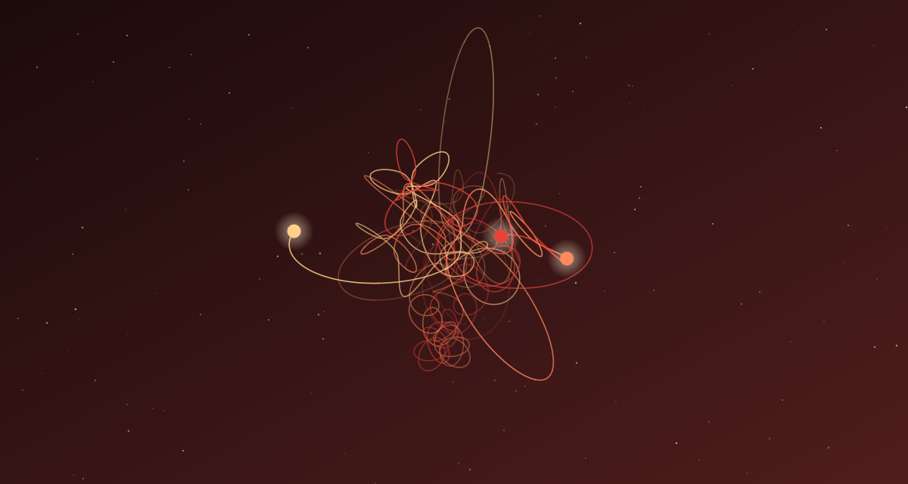

Задача трёх тел · глава 24 из 35
Мятеж

Кратко
Е Вэньцзе объясняет собранию, почему Трисолярис так боится работ Ван Мяо: его наноматериал позволил бы построить космический лифт и сделать путь в космос дешёвым. В этот момент армия под руководством Ши Цяна штурмует собрание. Трое членов ОЗТ утверждают, что у них ядерные заряды; Да Ши отвлекает женщину, у которой бомба настоящая, и стреляет в неё — срабатывает лишь обычная взрывчатка. Более двухсот членов ОЗТ, включая Е Вэньцзе, арестованы; сам Да Ши получает тяжёлое радиоактивное заражение.
Главные моменты
- «Летающее лезвие» опасно для Трисоляриса — вот почему Ван был мишенью.
- Штурм: Да Ши снова оказывается самым решительным человеком в комнате.
- Ядерная бомба, которая не взорвалась.
- Арест Е Вэньцзе.
Значение
Детективная развязка: заговор раскрыт, организаторы арестованы. Но это не победа — флот уже в пути, и главная угроза только впереди.
Наука в этой главе
- «Летающее лезвие» и космический лифт отчасти правда